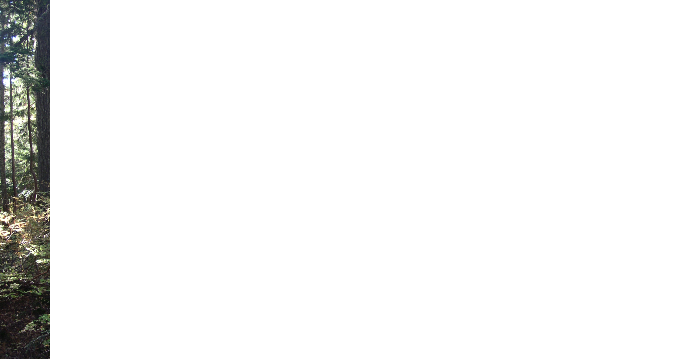
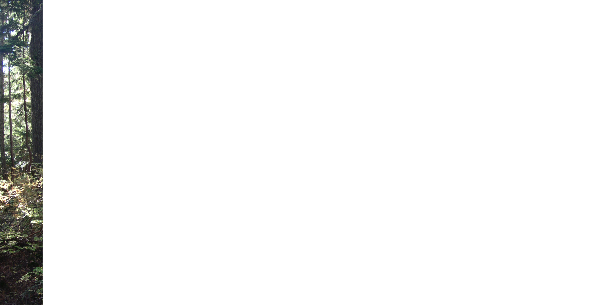
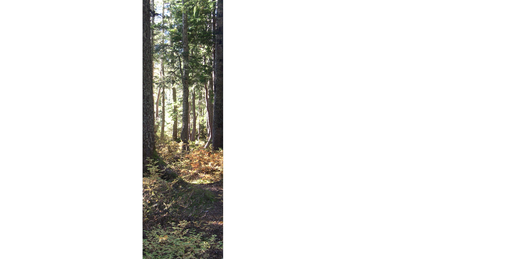
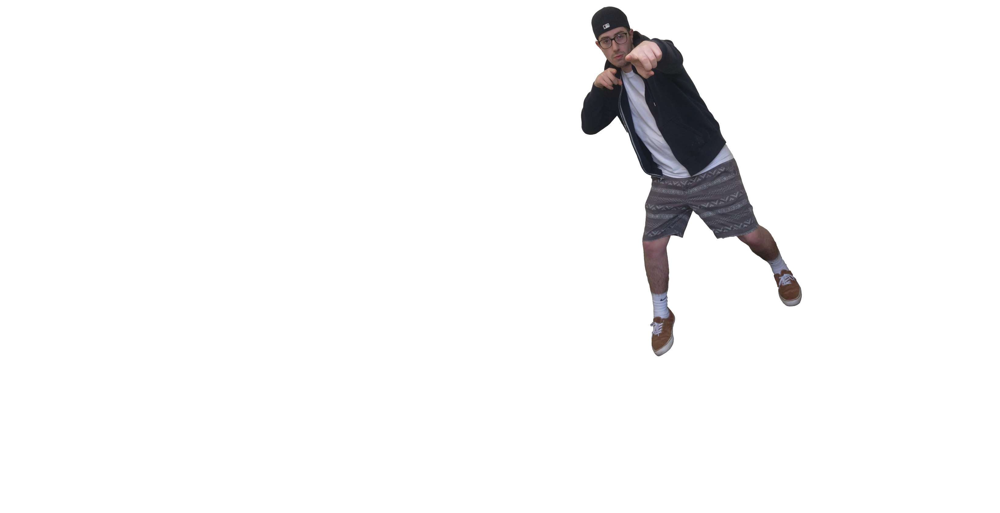
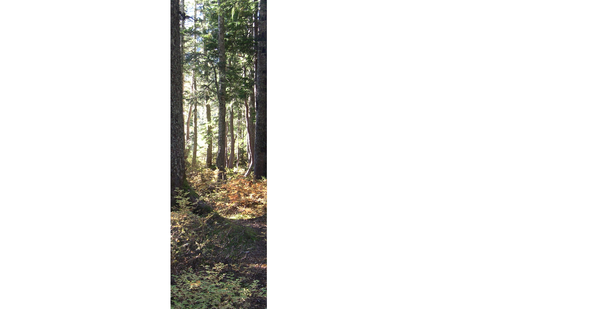
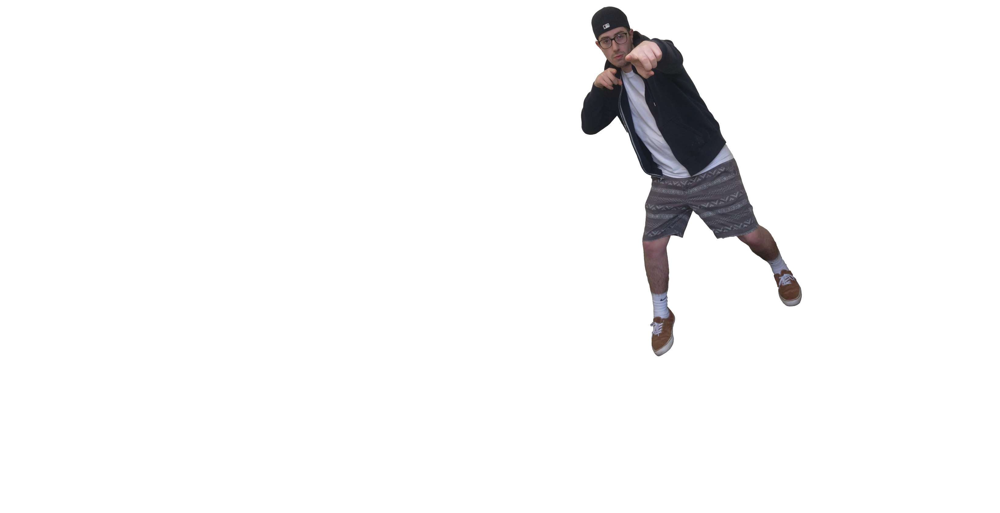

Take a Snap of our Snapcode above to add us on Snapchat!
 



 





Sean
"I'm the drummer!
That means I am usually in the back, but this time I snuck into the front."
Graydon
Guitar and lead vocals dude
"Music is my passion. I just want to write songs that spread good vibes that people can connect with. Also, Mars is my dad."
Alec
Guitar and vocals guy
"Sweet summer breezes, salty ocean waves, spicy memes, and Smash, with a little chill music on top. Tasty."
Mars
Bass and lead dad
"I love me some bass grooves and high notes along with a whole lot of chilling with some buds."

Check out our Facebook feed here to see where we've played in the past, and where we're performing next!
As individuals, we are passionate about music, our community, our environment, and our friends and family. As a band, we are Surfer Yeti. We are four guys with a whole lot of love for what we do and strong desire to keep spreading good vibes and amity with our music. We're not just looking for fans, we're looking for friends to share our feelings with and we invite you to come connect with us! There's four of us, hopefully at least one of us cool.
To find out more, check out our Facebook and other music pages using the links in the bottom right corner, or contact us at surferyetiband@gmail.com.